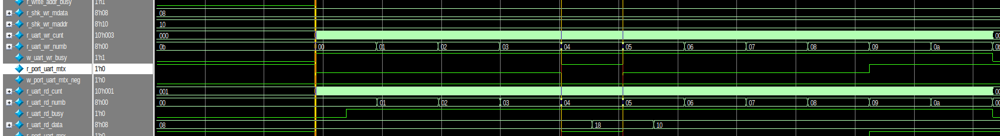

`timescale 1ns / 1ps
/*
*/ // ******************************************************************************* // Company: Fpga Publish // Engineer: FP // // Create Date: 2023/11/11 20:11:40 // Design Name: // Module Name: shk_to_uart // Project Name: // Target Devices: ZYNQ7010 | XCZU2CG | Kintex7 // Tool Versions: 2021.1 || 2022.2 // Description: // * // Dependencies: // * // Revision: 0.01 // Revision 0.01 - File Created // Additional Comments: // // ******************************************************************************* module shk_to_uart #( //mode parameter MD_SIM_ABLE = 0, //number parameter NB_BAUD_RATE = 115200, parameter NB_SYS_FRE = 100_000_000, //width //shake bus parameter WD_SHK_DATA = 8, parameter WD_SHK_ADDR = 8, parameter WD_ERR_INFO = 4 )( //system signals input i_sys_clk , input i_sys_resetn, //shake slaver input s_shk_wr_valid, //start write input s_shk_wr_msync, //write data valid input [WD_SHK_DATA-1:0] s_shk_wr_mdata, //write data input [WD_SHK_ADDR-1:0] s_shk_wr_maddr, //first data is as addr output s_shk_wr_ready, output s_shk_wr_ssync, output [WD_SHK_DATA-1:0] s_shk_wr_sdata, output [WD_SHK_ADDR-1:0] s_shk_wr_saddr, //shake slaver input s_shk_rd_valid, //start read data input s_shk_rd_msync, input [WD_SHK_DATA-1:0] s_shk_rd_mdata, input [WD_SHK_ADDR-1:0] s_shk_rd_maddr, //share addr with current data output s_shk_rd_ready, //read data out output s_shk_rd_ssync, output [WD_SHK_DATA-1:0] s_shk_rd_sdata, output [WD_SHK_ADDR-1:0] s_shk_rd_saddr, //uart port input s_port_uart_mtx, //from master tx output s_port_uart_mrx, //error info feedback output [WD_ERR_INFO-1:0] m_err_uart_info1 ); //======================================================== //function to math and logic /* end verilog
*/ localparam NB_BAUD_NUMB = NB_SYS_FRE / NB_BAUD_RATE; function automatic integer LOG2(input integer N); begin N = N - 1; for(LOG2 = 0; N > 0; LOG2 = LOG2 + 1) begin N = N >> 1; end end endfunction localparam WD_BAUD_NUMB = LOG2(NB_BAUD_NUMB); localparam NB_UART_BYTE = WD_SHK_ADDR + 2; //======================================================== //localparam to converation and calculate // ---------------------------------------------------------- // write prepare reg r_shk_wr_valid; wire w_shk_wr_valid_pos; reg r_shk_wr_msync; wire w_shk_wr_msync_pos; reg r_write_addr_busy; reg [WD_SHK_DATA-1:0] r_shk_wr_mdata; reg [WD_SHK_ADDR-1:0] r_shk_wr_maddr; // ---------------------------------------------------------- // write start reg [WD_BAUD_NUMB-1:0] r_uart_wr_cunt; reg [WD_SHK_ADDR-1:0] r_uart_wr_numb; wire w_uart_wr_busy; // ---------------------------------------------------------- // read prepare reg r_port_uart_mtx; wire w_port_uart_mtx_neg; // ---------------------------------------------------------- // read start reg [WD_BAUD_NUMB-1:0] r_uart_rd_cunt; reg [WD_SHK_ADDR-1:0] r_uart_rd_numb; reg r_uart_rd_busy; // ---------------------------------------------------------- // read data reg [WD_SHK_DATA-1:0] r_uart_rd_data; // ---------------------------------------------------------- // UART driver reg r_port_uart_mrx; //======================================================== //register and wire to time sequence and combine // ---------------------------------------------------------- // write prepare always@(posedge i_sys_clk) begin if(!i_sys_resetn) //system reset begin r_shk_wr_valid <= 1'b0; // r_shk_wr_msync <= 1'b0; end else if(1) // begin r_shk_wr_valid <= s_shk_wr_valid; // r_shk_wr_msync <= s_shk_wr_msync; end end assign w_shk_wr_valid_pos = s_shk_wr_valid && !r_shk_wr_valid; assign w_shk_wr_msync_pos = s_shk_wr_msync && !r_shk_wr_msync; always@(posedge i_sys_clk) begin if(!i_sys_resetn) //system reset begin r_write_addr_busy <= 1'b0; // end else if(w_shk_wr_valid_pos) // begin r_write_addr_busy <= 1'b1; // end else begin r_write_addr_busy <= 1'b0; end end always@(posedge i_sys_clk) begin if(!i_sys_resetn) //system reset begin r_shk_wr_mdata <= 1'b0; end else if(w_shk_wr_msync_pos) // begin r_shk_wr_mdata <= s_shk_wr_mdata; // end end always@(posedge i_sys_clk) begin if(!i_sys_resetn) //system reset begin r_shk_wr_maddr <= 1'b0; // end else if(1) // begin r_shk_wr_maddr <= s_shk_wr_maddr; // end end // ---------------------------------------------------------- // write start always@(posedge i_sys_clk) begin if(!i_sys_resetn) //system reset begin r_uart_wr_cunt <= 1'b0; // end else if(w_shk_wr_valid_pos || w_shk_wr_msync_pos) //start send begin if(r_uart_wr_cunt == 0) begin r_uart_wr_cunt <= 1'b1; //0->1 start counter end end else if(r_uart_wr_cunt >= NB_BAUD_NUMB) //reset begin if(r_uart_wr_numb == NB_UART_BYTE - 1'b1) begin r_uart_wr_cunt <= 1'b0; end else begin r_uart_wr_cunt <= 1'b0; end end else if(r_uart_wr_cunt != 0) //not stop begin r_uart_wr_cunt <= r_uart_wr_cunt + 1'b1; end end assign w_uart_wr_busy = r_uart_wr_cunt != 0; always@(posedge i_sys_clk) begin if(!i_sys_resetn) //system reset begin r_uart_wr_numb <= 1'b0; // end else if(w_shk_wr_valid_pos || w_shk_wr_msync_pos) begin r_uart_wr_numb <= 1'b0; end else if(r_uart_wr_cunt >= NB_BAUD_NUMB) // begin r_uart_wr_numb <= r_uart_wr_numb + 1'b1; // end end // ---------------------------------------------------------- // uart driver integer i; always@(posedge i_sys_clk) begin if(!i_sys_resetn) //system reset begin r_port_uart_mrx <= 1'b0; // end else if(w_uart_wr_busy) // begin if(r_write_addr_busy) begin // case(r_uart_wr_numb) // 0: r_port_uart_mrx <= 1'b0; // // 1: r_port_uart_mrx <= r_shk_wr_maddr[0]; // endcase for(i = 0; i < NB_UART_BYTE; i = i + 1) begin:FOR_NB_UART_BYTE1 case(i) 0: r_port_uart_mrx <= 1'b0; NB_UART_BYTE-1,NB_UART_BYTE-2: r_port_uart_mrx <= 1'b1; default: r_port_uart_mrx <= r_shk_wr_maddr[WD_SHK_ADDR - i]; endcase end end else begin for(i = 0; i < NB_UART_BYTE; i = i + 1) begin:FOR_NB_UART_BYTE2 case(i) 0: r_port_uart_mrx <= 1'b0; NB_UART_BYTE-1,NB_UART_BYTE-2: r_port_uart_mrx <= 1'b1; default: r_port_uart_mrx <= r_shk_wr_mdata[WD_SHK_DATA - i]; endcase end end end else begin r_port_uart_mrx <= 1'b0; end end assign s_port_uart_mrx = r_port_uart_mrx; assign s_shk_wr_ready = ~r_write_addr_busy; //not busy is write enable // ---------------------------------------------------------- // read prepare always@(posedge i_sys_clk) begin if(!i_sys_resetn) //system reset begin r_port_uart_mtx <= 1'b0; // end else if(1) // begin r_port_uart_mtx <= s_port_uart_mtx; // end end assign w_port_uart_mtx_neg = !s_port_uart_mtx && r_port_uart_mtx; // ---------------------------------------------------------- // read start always@(posedge i_sys_clk) begin if(!i_sys_resetn) //system reset begin r_uart_rd_cunt <= 1'b0; // end else if(!r_uart_rd_busy) //start recv begin if(r_port_uart_mtx) //wait low begin r_uart_rd_cunt <= 1'b1; end else begin r_uart_rd_cunt <= r_uart_rd_cunt + 1'b1; // end end else if(r_uart_rd_cunt >= NB_BAUD_NUMB) begin r_uart_rd_cunt <= 1'b0; end else begin r_uart_rd_cunt <= r_uart_rd_cunt +1'b1; end end always@(posedge i_sys_clk) begin if(!i_sys_resetn) //system reset begin r_uart_rd_numb <= 1'b0; // end else if(!r_uart_rd_busy) // begin r_uart_rd_numb <= 1'b0; // end else if(r_uart_rd_cunt >= NB_BAUD_NUMB) begin r_uart_rd_numb <= r_uart_rd_numb + 1'b1; end end always@(posedge i_sys_clk) begin if(!i_sys_resetn) //system reset begin r_uart_rd_busy <= 1'b0; // end else if(!r_uart_rd_busy && r_uart_rd_cunt > NB_BAUD_NUMB / 2) // begin r_uart_rd_busy <= 1'b1; // end else if(r_uart_rd_cunt >= NB_BAUD_NUMB && r_uart_rd_numb >= NB_BAUD_RATE - 1'b1) begin r_uart_rd_busy <= 1'b0; end end // ---------------------------------------------------------- // read data generate genvar j; for(j = 0; j < WD_SHK_DATA; j = j + 1) begin:FOR_WD_SHK_DATA always@(posedge i_sys_clk) begin if(!i_sys_resetn) //system reset begin r_uart_rd_data[j] <= 1'b0; // end else if(r_uart_rd_numb == i + 1) // begin r_uart_rd_data[WD_SHK_DATA-i-1] <= r_port_uart_mtx; // end end end endgenerate assign s_shk_rd_ready = !r_uart_rd_busy; //not busy ready data assign s_shk_rd_sdata = r_uart_rd_data; //======================================================== //always and assign to drive logic and connect //======================================================== //module and task to build part of system //======================================================== //expand and plug-in part with version //======================================================== //ila and vio to debug and monitor endmodule /* end verilog

*/